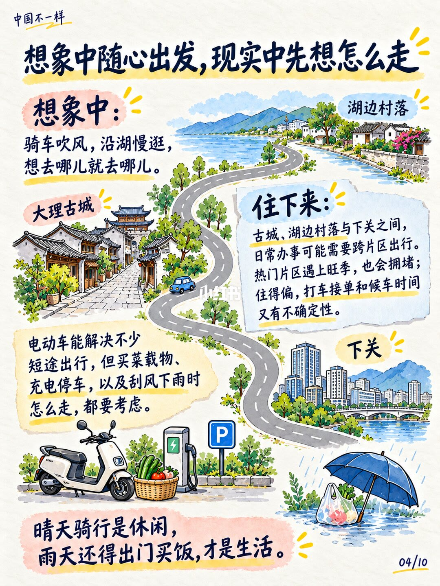
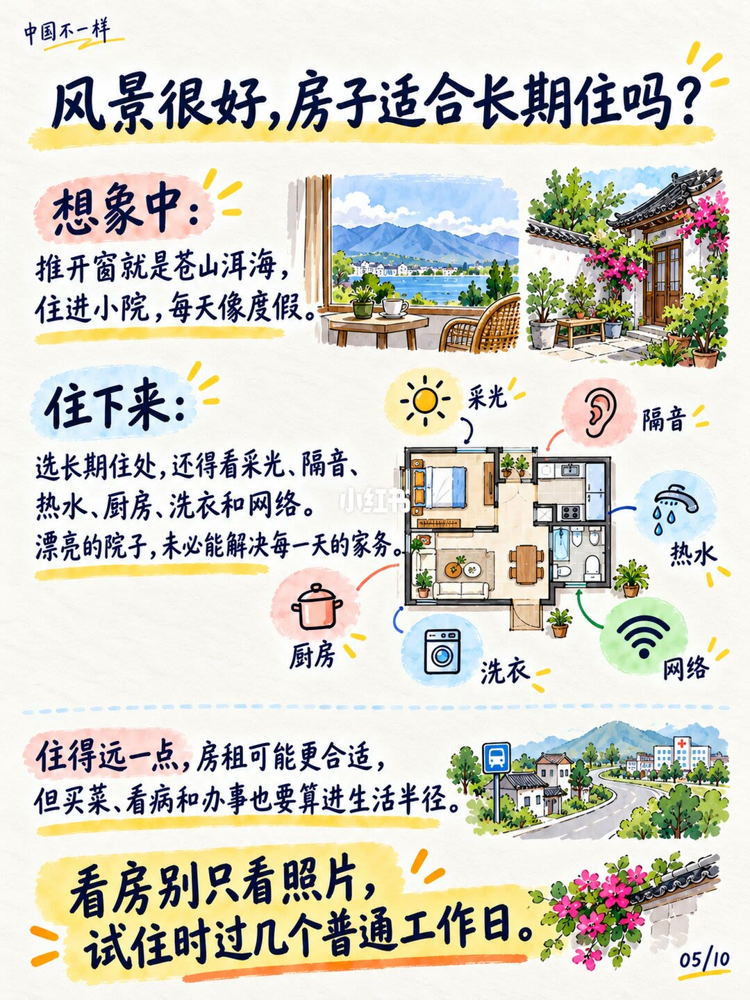
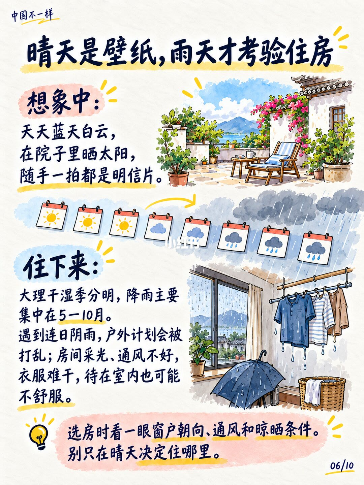
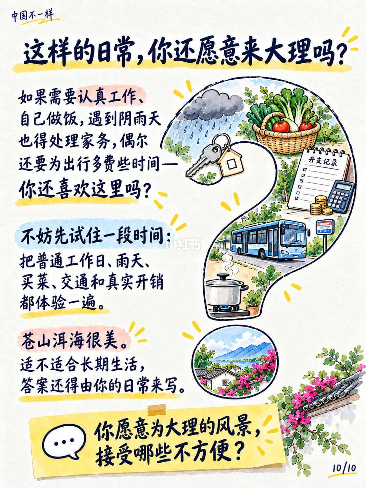

第 1 页：封面对照（想象 vs 住下来）

1/11封面：想象中苍山洱海喝茶发呆；住下来是房租买菜打车外卖与阴雨晾衣。
Cover: dream Cangshan–Erhai tea days vs rent, groceries, taxis, rain-drying laundry.
开篇定调：风景不够，琐碎才是真实。系列后页逐条拆开。
第 2 页：旅居不是旅游
2/11旅居不是旅游：仅有苍山洱海不够，生活琐碎才是最真实的。
Sojourning isn’t tourism—beauty alone isn’t enough; daily errands are the real story.
与第 1 页同题深化：把「度假滤镜」换成账单与家务清单。
第 3 页：开销会降吗？
3/11离开大城市开销未必降：民房自炊是一种预算；海景民宿咖啡打车是另一种。
Leaving a big city doesn’t auto-cut costs—habits and holiday-mode spending travel with you.
消费习惯可留在原地。生活成本看账单，不看城市名。
第 4 页：美食很多≠每天舒服
4/11美食很多不等于每天吃得舒服：特产尝鲜有趣，长期仍要口味营养价格与距离。
Lots of snacks ≠ easy daily meals—taste, nutrition, price, and distance still matter.
住得偏则探店与外卖覆盖变差；「每天吃什么」仍是题。
第 5 页：出行先想怎么走

5/11想象随心出发，现实先想路线：古城、湖边村落与下关跨片区；电动车也要算雨天与载物。
Cross-district errands, peak congestion, scooter limits in rain—mobility is logistics.
晴天骑行是休闲，雨天出门买饭才是生活。
第 6 页：房子适合长期住吗？

6/11风景很好，房子未必适合长住：采光隔音热水厨房洗衣网络；远租便宜但生活半径要算。
Pretty courtyards fail without light, soundproofing, hot water, kitchen, laundry, internet.
看房别只看照片；试住时过几个普通工作日。
第 7 页：雨天考验住房

7/11晴天是壁纸，雨天考验住房：5–10 月雨季连阴，采光通风晾晒决定舒适度。
Sunny days are wallpaper; May–Oct rains test drying, light, and ventilation.
别只在晴天决定住哪里。
第 8 页：清静也要看邻居
8/11想找清静也要看邻居：游客车流商户声，共享院子可能飘烟味。
Quiet needs neighbor check—tourist noise, traffic, and drifting smoke spoil courtyards.
风景决定想不想来；周围日常决定能不能待得自在。
第 9 页：工作会自动变轻松吗？
9/11到了大理，工作不会自动变轻松：会议交付客户消息仍在；收入账要先算清。
Remote work still has meetings and clients—scenery doesn’t pause rent or deliverables.
旅居给工作新背景，生活的账仍要自己算。
第 10 页：烦恼会一起搬家吗？
10/11换城市烦恼也可能搬家：工作消息、关系困扰、未来不确定会在安静时浮现。
Worries can relocate with you—anxiety and relationships surface when life slows down.
大理可给你喘气空间，安顿与面对自己仍需时间。
第 11 页：还愿意来吗？

11/11这样的日常你还愿意来？建议先试住：工作日、雨天、买菜、交通与真实开销。
Still willing? Trial-stay workdays, rain, groceries, transport, and real bills first.
苍山洱海很美；适不适合长期，答案由你的日常来写。你愿意为风景接受哪些不方便？
文末汇总
核心判断：旅居失败点不在风景不够美，而在把旅游消费习惯、住房条件、跨片区交通、雨季与远程工作账，误当成「换城自动清零」。
- 先试住普通工作日+雨天
- 列愿意接受的不方便清单
- 别用明信片照片决定长租
以上为原笔记图文观点整理，不是对该主题的全面定论。